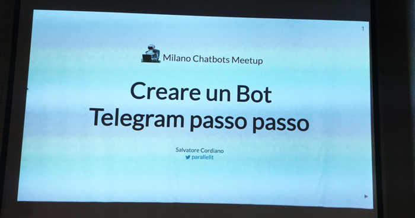

Creare un bot Telegram passo passo

Qualche giorno fa, precisamente il 29 settembre, si è tenuto a Milano il primo meetup sul tema dei chatbot.
Durante la serata sono intervenuti: Paolo Montrasio con il keynote introduttivo; Guido Bellomo con la presentazione del progetto open-source “RedBot”; Alessandro Vitale con il talk intitolato “NLP e bot design”.
Al meetup c’è stato anche il mio intervento nel quale ho raccontato come è possibile “Creare un bot Telegram passo passo”.
Le slide sono disponibili qui, mentre il tutorial completo per la creazione di un bot Telegram è disponibile a questo link.